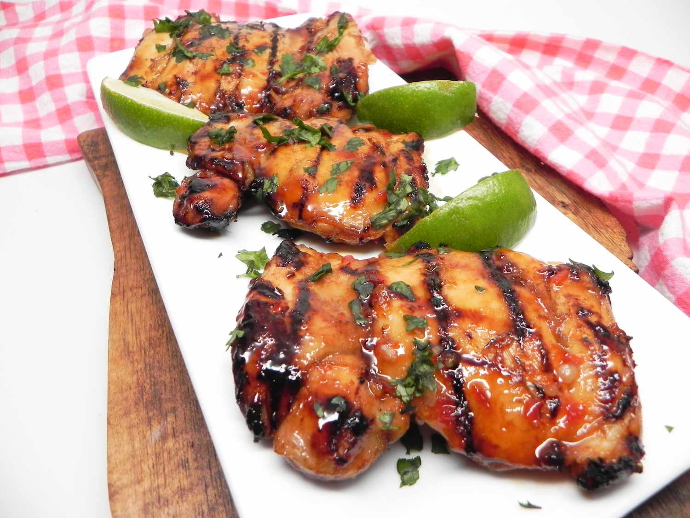

|
6 bone in chicken thighs (substitute ~2-3 lbs of your preferred cut; cooking times may differ--use a thermometer!)
Marinade Ingredients
- 2 pucks of palm sugar (substitute ~2-3 tbsp brown sugar)
- 5 cloves garlic
- ~1 inch ginger
- 1 thai chili (add more if you want it spicier)
- ¼ tsp msg
- 2-3 limes
- 5-6 tbsp fish sauce
- 1 tsp soy sauce
- 2 tsp dark soy sauce
|
- Combine marinade ingredients into a paste. Best with a mortar & pestle but you can food process all of it instead
- Combine marinade with chicken
- Cover and marinate for 8-24 hours in fridge
- Preheat grill to 500
- Set half of grill to low (charcoal to one side or burners on low for propane) and cook chicken skin-side up over cool side of grill 20-30 minutes
- Finish over high heat (final temp ~160-170F for thighs)
- Serve with sticky rice, papaya salad, grilled vegetables, nam pla prik
|

|